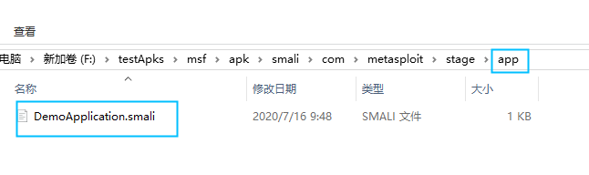
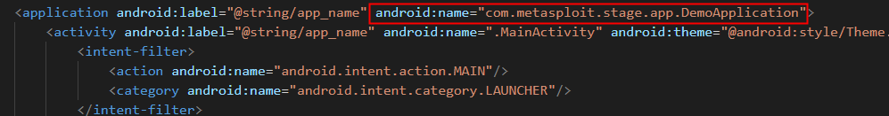
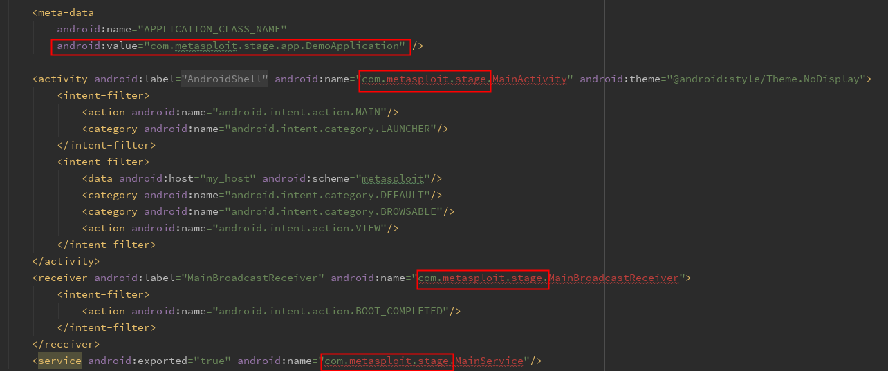

远控免杀实验笔记（一）
郑重声明：本文展示的过程是在模拟环境中进行的，只为学习研究之用，如有人用于非法用途，产生的后果笔者不负任何责任。
msf远控程序直接安装在手机上，会被安全卫士识别为病毒。移动端安全卫士识别病毒有两种方式，一种是依靠特征码扫描，即应用包名和签名；一种是主动防御，监控高危的API调用。因此，考虑给应用加个壳，也就是将原本的dex文件加密，在应用运行时再动态解密加载。
Android应用加固目前已经发展的比较成熟了，为了不重复造轮子，同时我们加壳的目的并不是防止反编译，只是为了隐藏代码，直接找一个开源的加壳工具就可以了。
加壳原理参考博客：https://blog.csdn.net/LVXIANGAN/article/details/84956476
工具下载地址：https://github.com/lvxiangan/Android-Shell2
加壳步骤：
- 反编译原远控apk, 增加Application类，并相应的修改AndroidManifest.xml.


回编译后重新打包，签名。经过测试，可以连通~
修改解壳程序的Manifest文件，将远控apk的Manifest文件中的权限，和Application标签中的内容拷贝过来，注意Application标签和Activity等四大组件的android:name属性，要补全包名。

然后，Build工程，生成解壳apk。
将解壳apk中的classes.dex文件拷贝出来，改为shell.dex，与远控apk文件一起放在加密工程的force目录下。运行加密程序即可将远控apk加密，并与shell.dex合并，生成新的classes.dex文件。
将生成的classes.dex文件拷贝到解壳apk中，替换原有的clasess.dex。
将解壳apk中原有的签名文件删除，即
META-INF目录，重新签名。安装测试，可以连通~
安装了主流的三款手机安全卫士都没有检测出来，这一阶段的目标达成~
但是，存在一个问题：直接adb install 安装应用时，报了adb: failed to install payload-release.apk: Failure [INSTALL_FAILED_TEST_ONLY: installPackageLI]错误。
可能原因是：
Manifest中设置了
android:testOnly="true"，需要将此属性的值设置为false。然而工程中并没有设置此属性啊，，，gradle文件配置时使用了测试版本,如：
1
2
3dependencies {
classpath 'com.android.tools.build:gradle:4.0.0-alpha'
}需要将
-alpha删掉。然而工程中也并未使用测试版本，，，
暂时的解决方法是，安装时使用adb install -t apk，加一个参数-t，就可以正常安装了。
当前远控应用不能常驻后台，因此下一个需要解决的问题是连接的稳定性。